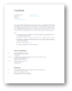

Louis Ritchie
Full-Stack developer at
Reelgood.com
Previously at
Leanpub.com
3rd Year B.Sc., Math & Computer Science, UVic
Resume 
Github
About me
President of
UVic GameDev club
.
Software developer for
UVic Aero
.
Lead organizer of
Global Game Jam 2017
.
Co-lead organizer of HackUVic for
UVic Web Dev club
.
More about me
Pictures of me
Repositories of note
Prims Algorithm for Minimum Spanning Trees
CSS indenter in Python
Detectify - Detect viewbots on Twitch
Global Game Jam landing page
My dotfiles
Blog
Global Game Jam - Jan 31st, 2017
Uvic Aero, Detectify project - Jan 31st, 2017
Concatenate multiple mp4's with ffmpeg - Feb 18th, 2017
Writing HTML & CSS time-consuming and strenuous - Feb 26th, 2017
Organizing student-run tech events - March 11th, 2017
Breaking my OS provides motivation to learn Linux Systems Programming - March 29th, 2017
DEP